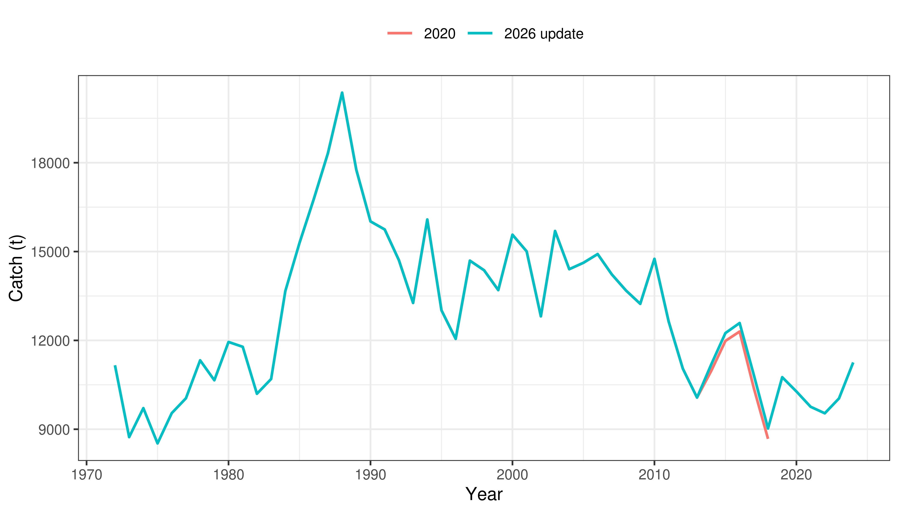
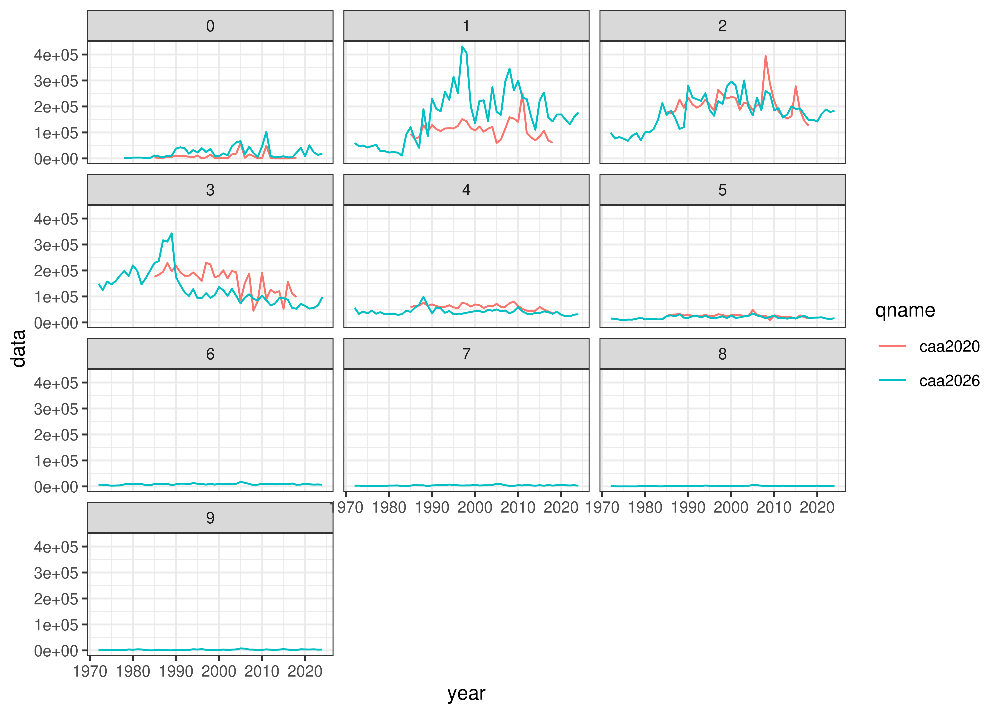
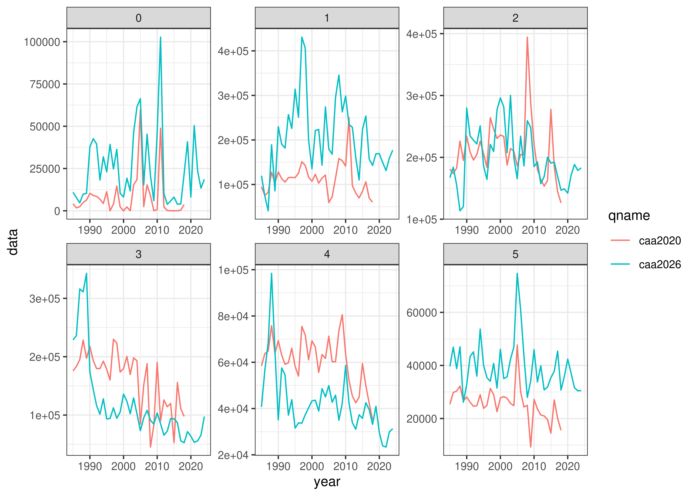
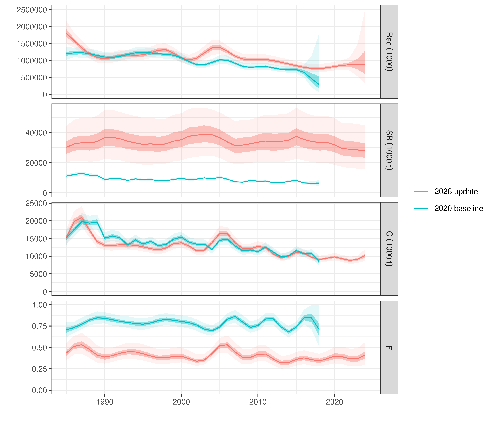
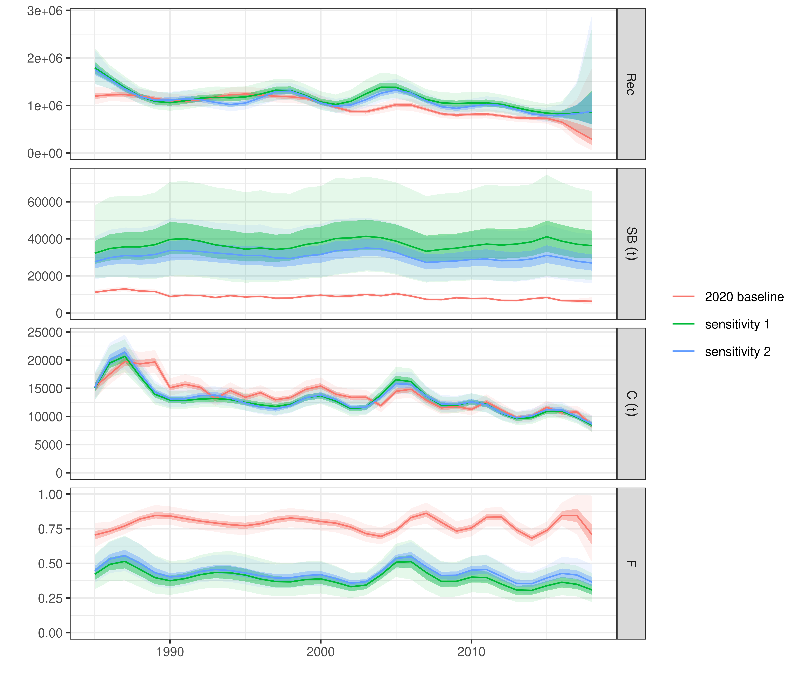
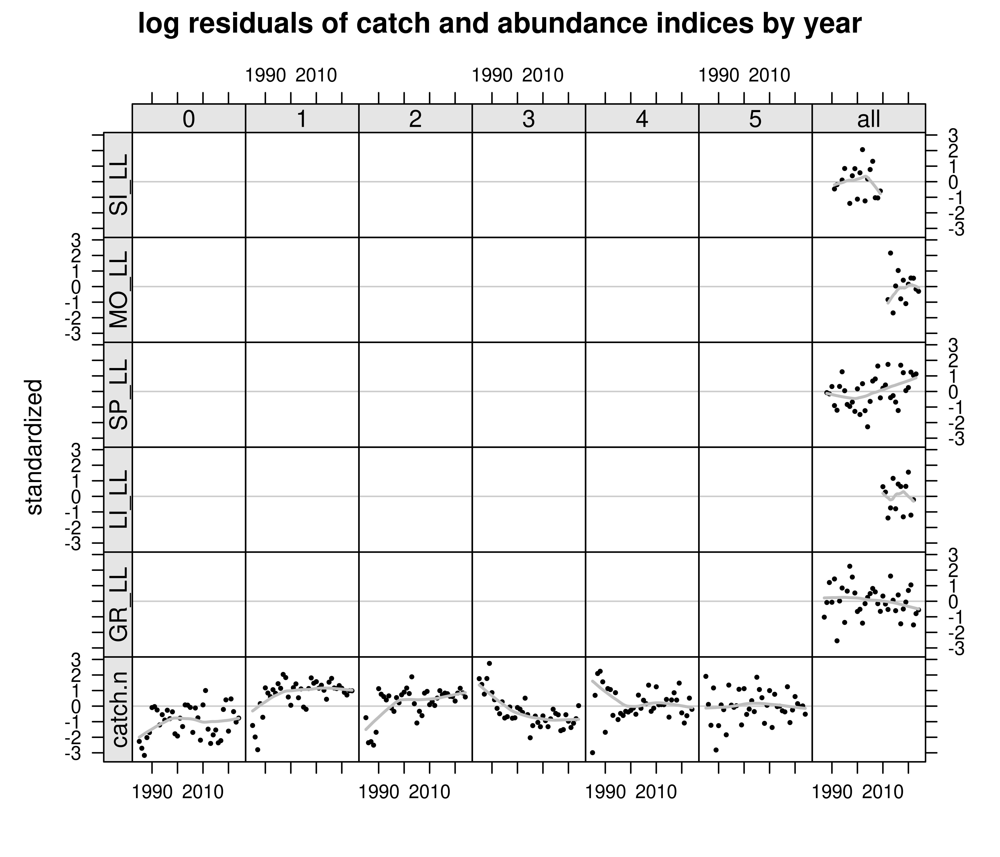
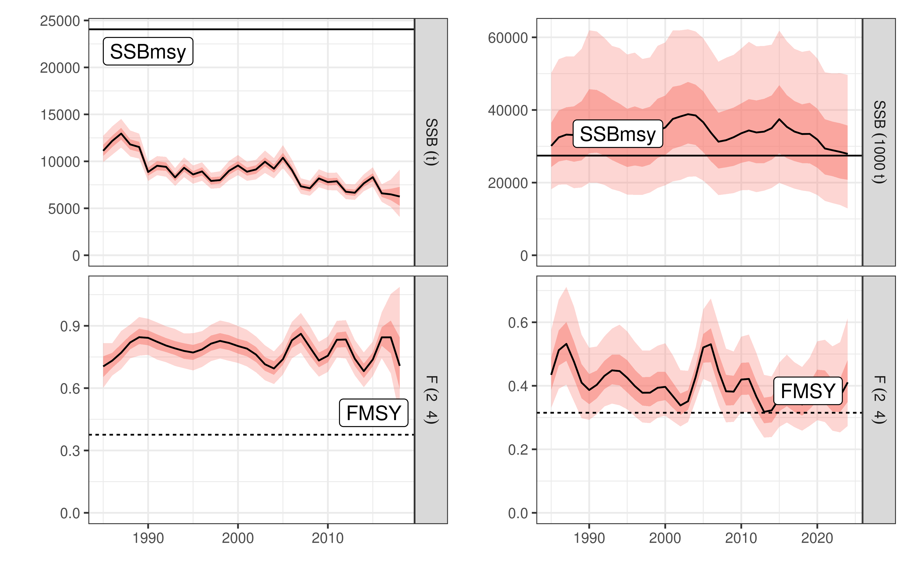

| Index | Series | First year | Last year | Age range |
|---|---|---|---|---|
| Greek longliners | GR_LL | 1987 | 2024 | 2-4 |
| Ligurian longliners | LI_LL | 2009 | 2022 | 2-4 |
| Spanish longliners | SP_LL | 1988 | 2023 | 2-4 |
| Moroccan longliners | MO_LL | 2012 | 2024 | 2-4 |
| Sicilian longliners | SI_LL | 1991 | 2009 | 2-4 |
UPDATED (Continiuty run) ASSESSMENT OF THE MEDITERRANEAN SWORDFISH (Xiphias gladius) STOCK USING A STATISTICAL CATCH-AT-AGE MODEL (a4a) - draft
This document updates the 2020 age-structured (a4a) assessment of the Mediterranean swordfish (Xiphias gladius) with catch-at-age and standardized catch-per-unit-effort (CPUE) data extended through 2024. To maintain continuity with the 2020 exercise, the updated model was configured with the same assumptions (constant natural mortality, plus group at age 5) and fitted to six standardized CPUE series with the a4a statistical catch-at-age framework. The updated run is compared with the 2020 assessment and with two sensitivity runs that truncate the series to the 2018 terminal year, with one using the estimated CPUE indices from 2020 and the other the ones provided for the 2026 assessment. The estimated trajectories of catch, spawning-stock biomass, recruitment and fishing mortality are presented.
Swordfish, Mediterranean Sea, stock assessment, catch-at-age, a4a
Introduction
This document presents the 2026 update to the Mediterranean Swordfish (Xiphias gladius) stock assessment, applying a statistical age-structured population model (a4a) [cite]. This assessment serves as a continuity update to the a4a assessment conducted in 2020 (ICCAT, CV077030482). The time series of catch and abundance data have been extended through 2024 (1987–2024).
The primary objective of this 2026 document is to provide an updated evaluation of the stock status by extending the 2020 model configuration with the latest available fisheries data up to 2024. As a continuity run, this analysis does not introduce new model structures or alter the fundamental biological assumptions agreed upon in 2020. Specifically, the natural mortality (\(M\)), somatic growth , and maturity-at-age matrices are fixed to their previously benchmarked values. The update focuses exclusively on the inclusion of newly standardized relative abundance indices and updated catch-at-age matrices for the period 2020–2024, followed by retrospective diagnostics and updated short-term projections.
Data and methods
Catch and survey indices data
The ICCAT Secretariat provided catch-at-age (CAA) matrices for ages 0-9 spanning 1972-2024. For continuity with 2020, the fitted model truncates the series to start in 1985 and collapses ages into a plus group at age 5, with the reference fishing mortality (\(\bar{F}\)) averaged over ages 2-4. Biological inputs (maturity, weight-at-age and a constant natural mortality of \(M = 0.2\)) are unchanged from the 2020 configuration.
While six standardized CPUE series were compiled during data preparation, the updated continuity run utilizes five by droping early Ligurian surface longline series (LI_SUR) to match the final 2020 model.
The standardized CPUE series are used as relative biomass indices (Table @ref(tab:idx-tab)): Greek (GR_LL), Spanish (SP_LL), Moroccan (MO_LL), Ligurian longline (LI_LL) and a historical Sicilian series (SI_LL). The indices are treated as representative of ages 2-4. Each time series was standardized by dividing its annual values by its series-specific mean value.
Total catch and catch-at-age for the 2026 update are compared with the 2020 inputs in Figures @ref(fig:catch-comp) and @ref(fig:caa-comp).


For the update run we keep the plusgroup as the one agreed in the 2020 assessment: using a plus group of 5.
[1] "maxfbar has been changed to accomodate new plusgroup"
Analysis
The assessment uses the a4a statistical catch-at-age framework, in which fishing mortality, the recruitment and catchability are specified as separable submodels of smooth functions of age and year. Four runs are reported: (i) The 2020 a4a model as a baseline; (ii) the updated run fitted to data through 2024; and (iii) sensitivity run that truncate the updated data to the 2018, terminal year of the 2020 assessment (iv) sensitivity run that truncate the updated data to 2018, using the 2020 standardized indices. Submodel formulae are given in Table @ref(tab:mods) and Table @ref(tab:qmods).
| Run | F submodel | R submodel |
|---|---|---|
| 2020 baseline | s(year, k=17) + s(age, k=3) | s(year, k=15) |
| 2026 update | s(year, k=19) + s(age, k=3) | s(year, k=17) |
| Sensitivity 1 (up to 2018) | s(year, k=17) + s(age, k=3) | s(year, k=15) |
| Sensitivity 2 (up to 2018 - old indices) | s(year, k=17) + s(age, k=3) | s(year, k=15) |
| Index | Fleet | qmodel Formula |
|---|---|---|
| GR_LL | Greek Longline | ~ 1 |
| LI_LL | Ligurian Longline | ~ s(year, k = 3) |
| SP_LL | Spanish Longline | ~ 1 |
| MO_LL | Moroccan Longline | ~ s(year, k = 3) |
| SI_LL | Sicilian Longline | ~ 1 |
Results and conclusions
[…]
Plots of the 4 different runs are presented in @ref(fig:comp-plot) and @ref(fig:sens-plot). Standardized residuals of the fit to the CPUE indices and to catch-at-age for the updated run are shown in Figure @ref(fig:resid). No strong systematic patterns are apparent.




Stock status
[…]
[1] "maxfbar has been changed to accomodate new plusgroup"
References
Anon. 2021. Report of the 2020 Mediterranean swordfish stock assessment meeting. Col. Vol. Sci. Pap. ICCAT, 77(6): 1-96.
Jardim, E., Millar, C.P., Mosqueira, I., Scott, F., Osio, G.C., Ferretti, M., Alzorriz, N., Orio, A. 2015. What if stock assessment is as simple as a linear model? The a4a initiative. ICES Journal of Marine Science, 72(1): 232-236.